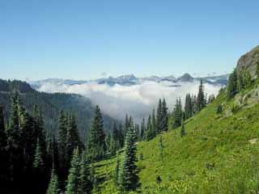

Overview
Chapters
The journey began at the Mexican border monument in Campo, California. Standing at the southern terminus, looking north toward Canada 2,650 miles away, the magnitude of the undertaking ahead was both daunting and exhilarating. The first steps of what would become a seven-year expedition.
The first 110 miles crossed the brutal Sonoran Desert—extreme heat, scarce water sources, and exposed terrain. Warner Springs marked the first significant resupply point after eight days of desert hiking. A reminder that the PCT wastes no time testing those who dare to attempt it.
Climbing into the San Gabriel Mountains brought the first real elevation gain and pine forests after weeks of desert. Big Bear marked a turning point—both a resupply stop and the place where trail companion Sitkadog departed. The solo journey would continue from here.
The legendary Hiker Heaven in Agua Dulce, hosted by trail angels Donna and Jeff Saufley. A welcome oasis of hospitality, hot meals, laundry, and camaraderie with fellow thru-hikers. These moments of trail magic sustained spirits through the challenging miles ahead.
Crossing through the Mojave Desert brought extreme heat and desolation. The small town of Mojave offered a brief respite before pushing on toward the gateway to the High Sierra. Each mile brought closer to Kennedy Meadows and the mountains that lay beyond.
Kennedy Meadows marked the end of the 700-mile Southern California section after 58 days of desert hiking. Returning on July 31st to begin the Sierra crossing, this waypoint represented both an ending and a beginning—leaving the desert behind and entering the high country ahead.
A side trip to summit Mt. Whitney—the highest peak in the contiguous United States at 14,500 feet. Standing on the summit, looking out over the Sierra Nevada stretching north and south, the scale of the mountain range became clear. The High Sierra adventure had truly begun.
Forester Pass—the highest point on the entire Pacific Crest Trail at 13,153 feet. Crossing the Sierra crest through this dramatic notch in the mountains, surrounded by granite peaks and snowfields. This moment epitomized the raw beauty and challenge of the High Sierra.
Entering Yosemite National Park through the high country of Tuolumne Meadows. Alpine meadows, granite domes, and crystalline lakes surrounded the trail. One of the most iconic sections of the PCT, where wilderness and grandeur converge in perfect harmony.
Reaching Lake Tahoe marked the northern end of the High Sierra section. The deep blue alpine lake stretched for miles, a stunning reward after the challenging mountain passes. The transition from high alpine terrain to the volcanic landscapes of Northern California lay ahead.
Passing through Lassen Volcanic National Park, the trail entered volcanic terrain—steaming fumaroles, alpine lakes, and the distinctive cone of Mt. Lassen rising above. A dramatic shift from the granite peaks of the Sierra to the volcanic landscapes of the Cascades.
The massive volcano of Mt. Shasta dominated the landscape—a 14,162-foot sentinel visible for days. The trail passed through Dunsmuir in its shadow, marking 1,500 miles of continuous hiking. The journey's scope was becoming tangible with each milestone reached.
The legendary Seiad Valley Cafe and its infamous pancake challenge—five massive pancakes that have defeated countless thru-hikers. A moment of levity and excess before the final push to Oregon. These trail traditions provide both nourishment and entertainment in the wilderness.
Crossing from California into Oregon after months of hiking through the Golden State. The symbolic milestone marked both an achievement and a transition—leaving behind the mountains and deserts of California and entering the forests and volcanoes of Oregon and beyond.
The trail crossed Interstate 5 near Ashland, marking the end of an incredible 1,000-mile summer push through the Sierra and Northern California. After 68 days of continuous hiking since Kennedy Meadows, a well-earned rest before continuing north through Oregon and Washington in 2005.
Returning to the PCT after winter break, the journey resumed at Ashland crossing Interstate 5. Oregon and Washington awaited—937 more miles through volcanic peaks, alpine wilderness, and dense forests to reach the Canadian border.
Crater Lake—the deepest lake in the United States at 1,943 feet, formed by the collapsed volcano Mount Mazama. The impossibly blue water surrounded by steep caldera walls created one of the most spectacular sights on the entire Pacific Crest Trail.
Mount Thielsen, known as the "Lightning Rod of the Cascades," its distinctive spire-like summit struck repeatedly by lightning over millennia. The volcanic spine rose dramatically above the surrounding forest, a preview of the volcanic landscapes ahead.
The Three Sisters—South, Middle, and North Sister—volcanic peaks dominating the Oregon Cascades. The trail wound through alpine meadows, lava fields, and pristine wilderness, passing through one of Oregon's most scenic sections.
Mount Jefferson, Oregon's second-highest peak, standing sentinel over the surrounding wilderness. The trail traversed the Mount Jefferson Wilderness, offering stunning views of glaciers, alpine lakes, and endless forest stretching to the horizon.
Olallie Lake, surrounded by over 200 alpine lakes and ponds in the Olallie Scenic Area. A landscape of volcanic peaks and pristine waters, offering respite and resupply before the final push through Oregon toward Mount Hood.
Mount Hood, Oregon's highest peak and most prominent landmark, rising majestically above Timberline Lodge. The PCT passed directly below the glaciated volcano, offering spectacular views of its snow-covered summit and massive glaciers.
Cascade Locks, at just 151 feet elevation—the lowest point on the entire Pacific Crest Trail. After months of climbing mountain passes and traversing high alpine terrain, the Columbia River Gorge marked a dramatic descent and transition.
The Bridge of the Gods, spanning the mighty Columbia River between Oregon and Washington. This iconic crossing marked the transition from Oregon into Washington state—the final state before Canada, with 500 miles remaining to the northern terminus.
The Volcanic Triangle—three massive Cascade volcanoes visible from the trail. Mount St. Helens with its blown-out crater, Mount Adams rising in solitude, and Mount Rainier dominating the skyline at 14,441 feet. A stunning display of volcanic power.
White Pass, where trail companion Jess Little joined for the final push through Washington. After 2,298 miles of mostly solo hiking, the companionship and shared experience brought new energy for the remaining 350 miles to Canada.
Chinook Pass, a major highway crossing in the Washington Cascades. Jess departed the trail here after several days of hiking together, leaving the final 330 miles to be completed solo once again through the North Cascades to Canada.
Snoqualmie Pass, where the PCT crossed Interstate 90. A major resupply point and the last easy access before entering the remote North Cascades. The final 260 miles would traverse some of the wildest terrain on the entire trail.
Stevens Pass, crossing U.S. Route 2 with views of the Cascades stretching north. Less than 200 miles remained to the Canadian border. The end was approaching, but the North Cascades would ensure these final miles were among the most challenging.
Stehekin, a remote community accessible only by boat, plane, or foot, nestled at the head of Lake Chelan. The last resupply point before the final 110-mile push through North Cascades National Park to the Canadian border.
The northern terminus at Manning Park, British Columbia. After 2,657 miles and 147 days of hiking from the Mexican border, the Pacific Crest Trail was complete. Standing at the monument marking the Canadian border, the magnitude of the achievement settled in—the first stage of Under Human Power was finished.
Photos & Videos


